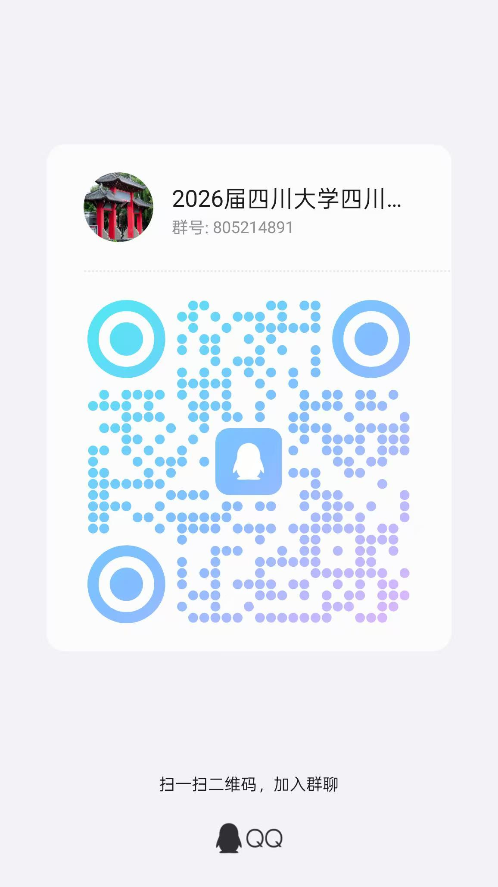

学生会 · 校园活动
选调生丨四川省面向四川大学选调2026届优秀大学毕业生公告及宣讲安排
发布时间：2025-09-22
为了方便后续相关事宜的通知，请有意向报考四川选调的同学加入 202 6 届四川大学四川选调 QQ群（ 1群 群号： 805214891 2群群号：1057249039 ） 四川省急需紧缺选调生宣讲会通知：四川省委组织部将于2025年9月25日（星期四）下午14:30在四川大学望江校区西五教演播厅开展四川省急需紧缺选调生宣讲会，请有意向报考的同学积极参与。 为深入学习贯彻党的二十大精神和习近平总书记关于加强和改进选调生工作的重要指示要求，着力培养造就高素质专业化干部队伍，根据 中央组织部 《关于进一步加强和改进选调生工作的意见》（组通字〔 2018 〕 17 号）、省委组织部《关于进一步加强和改进选调生工作的实施意见》（川组通〔 2018 〕 54 号） 要求 ， 现就面向 四川 大学 选调 202 6 届应届优秀大学毕业生有关事 项公告如下。 一、选调范围 （ 一 ） 人员范围 四川 大学 202 6 年大学本科及以上学历学位应届毕业生，具体包括： 1. 全日制大学本科学历、学士学位应届毕业生。 2. 非定向就业的硕士研究生及以上学历学位应届毕业生。 3. 四川省定向培养的少数民族高层次骨干大学本科及以上学历学位应届毕业生（非在职）。 全日制本科在 四川 大学就读并取得相应学历学位的 202 6 届非定向就业 应届 硕士研究生，或全日制本科、非定向就业硕士研究生在 四川 大学就读并取得相应学历学位的 202 6 届非定向就业 应届 博士研究生，也在人员范围内。 （二）专业范围 本科： 材料类、临床医学类、基础医学类、口腔医学类、医学技术类、药学类、电子商务类、中国语言文学类、电子信息类、计算机类、机械类、仪器类、自动化类、能源动力类、电气类、化工与制药类、食品科学与工程类、经济学类、财政学类、金融学类、经济与贸易类、城乡规划、人文地理与城乡规划、资源环境与城乡规划管理、法学类、土木类、水利类、管理科学与工程类、旅游管理类、物流管理与工程类、会计学、审计学、财务管理、财务会计教育、新闻传播学类、马克思主义理论类、化学类、护理学类 。 研究生： 材料科学与工程、冶金工程、材料与化工、纳米科学与工程、临床医学、基础医学、口腔医学、药学、医学技术、电子商务、中国语言文学、汉语国际教育、国际中文教育、皮革化学与工程、核技术及应用、营养与食品卫生学、电子科学与技术、信息与通信工程、电子信息、集成电路科学与工程、计算机科学与技术、网络空间安全、软件工程、智能科学与技术、机械工程、机械、仪器科学与技术、控制科学与工程、系统科学、动力工程及工程热物理、能源动力、电气工程、化学工程与技术、食品科学与工程、食品与营养、金融、保险、税务、应用经济学、理论经济学、数字经济、城乡规划学、城市规划、城市规划与设计、人文地理学、法律、法学、纪检监察学、知识产权、土木工程、水利工程、土木水利、管理科学与工程、工程管理、旅游管理、物流管理、物流工程、物流管理与工程、物流工程与管理、会计学、会计、审计学、审计、企业管理、财务管理、新闻传播学、新闻与传播、出版、马克思主义理论、中共党史党建学、化学、护理学、护理 （上述专业对应的专业硕士，也在专业范围内）。 以上专业名称均为一级或二级学科名称。 省级 “ 优秀青年马克思主义者培养工程 ” 培养对象 ， 校级及以上 “ 优秀毕业生 ”“ 优秀共产党员 ”“ 三好学生 ”“ 优秀学生 ”“ 优秀研究生 ”“ 优秀硕士 ”“ 优秀博士 ”“ 优秀学生干部 ”“ 优秀研究生干部 ” 或 “ 优秀团干部 ” ， 担任校学生会（研究生会、团委）主席、副主席（书记、副书记）一学年以上， 担任 院系学生会（研究生会、团委）主席（书记）一学年以上，不限专业 。 报考攀枝花 市 、广元 市 、巴中 市 、雅安 市、 阿坝州、甘孜州、凉山州的，不限专业。 二、资格条件 报考人员除了应当符合《中华人民共和国公务员法》（以下简称公务员法）、《公务员录用规定》规定的资格条件外，还应当符合以下条件： （一） 具有中华人民共和国国籍和户籍，且无国（境）外永久居留权。 （二） 对党忠诚，有正确的政治立场和政治态度，认真学习习近平新时代中国特色社会主义思想，增强 “ 四个意识 ” 、 坚定 “ 四个自信 ” 、 做到 “ 两个维护 ” ，在思想上政治上行动上同以习近平同志为核心的党中央保持高度一致，坚持走中国特色社会主义道路，自觉践行社会主义核心价值观，爱党爱国，有理想抱负和家国情怀，甘于为国家和人民服务奉献。 （三）作风朴实，诚实守信，有较好的组织协调能力、人际沟通能力和语言文字表达能力，服从组织安排。 （四） 学习成绩优良，应届本科、硕士毕业生应于 202 6 年 1 月 1 日至 7 月 31 日取得相应毕业证和学位证，应届博士毕业生应于 202 6 年 1 月 1 日至 12 月 31 日取得相应毕业证和学位证。 （五） 18 周岁以上，应届博士毕业生 35 周岁以下（ 198 9 年 10 月 9 日以后出生），应届硕士毕业生 30 周岁以下（ 199 4 年 10 月 9 日以后出生） ， 应届大学本科毕业生 25 周岁以下（ 199 9 年 10 月 9 日以后出生）。具有参军入伍经历人员相应放宽两岁。 （ 六 ） 符合下述条件之一： 1. 已加入中国共产党（含预备党员）； 2. 具有参军入伍经历； 3. 获国家级奖学金； 4. 校级及以上 “ 优秀青年马克思主义者培养工程 ” 培养对象； 5. 院系级及以上 “ 优秀毕业生 ”“ 三好学生 ”“ 优秀学生 ”“ 优秀硕士 ”“ 优秀博士 ”“ 优秀研究生 ”“ 优秀学生干部 ”“ 优秀研究生干部 ”“ 优秀团干部 ” ； 6. 担任副班长及以上学生干部一学年以上（含班级〈团支部、党支部〉正副班长〈正副书记〉，校、院系学生会〈研究生会、团委〉中层副职及以上，校、院系协会〈社团〉正副职）。 上述 6 项选调条件均须在 202 5 年 10 月 31 日前取得，其中：第 3—6 项须在本次选调范围内高校攻读全日制大学本科、非定向就业硕士研究生及以上学历学位期间取得（若第 4 、 5 项荣誉、称号等未在本次选调范围内高校获得，但属省级及以上的，也可视为符合上述 6 项选调条件之一）。 （ 七 ） 具有正常履行职责的身体条件和心理素质。 （ 八 ）符合选调职位要求的其他条件。 （ 九 ） 凡有以下情形之一的人员，不得报名： 1. 定向、委托培养或在职攻读学历学位的 ； 2. 是现役军人的； 3. 在校期间有违法违纪违规行为、学术不端或道德品行问题的； 4. 受过处分的或因犯罪受过刑事处罚的； 5. 被开除中国共产党党籍的； 6. 被开除公职的或公务员（参照公务员法管理机关〈单位〉工作人员）被辞退未满 5 年的； 7. 被依法列为失信联合惩戒对象的； 8. 在各级公务员招考中被认定有舞弊等严重违反录用纪律行为的； 9 . 具有法律法规规定不得录用为公务员的其他情形的。 三、选调程序 （一）报名和资格初审 1. 网上报名。符合选调范围、资格条件的人员，认真阅读公告后，于 202 5 年 1 0 月 9 日至 10 月 15 日 18:00 登录 四川省人力资源和社会保障厅官网 “ 人事考试 ” 专栏（ https://scpta.com.cn/ ），按网络提示如实、准确、完整填写《四川省 202 6 届急需紧缺专业选调生报名推荐表》（ 填报指南 详见附件 3 ），对照选调职位表（见附件 1 、附件 2 ），选择符合条件的职位报名 。 每人可报 3 个志愿，其中省直部门职位在第一志愿中填报 、 成都市职位在第一志愿中填报（第一志愿填报省直部门职位的，可在第二志愿填报） ，同时下载照片审核处理工具（在《报名推荐表》上传照片处下载 ）进行照片处理，并按网络提示上传照片。不按要求填报或提供、填写虚假信息的，一经查实，即取消选调资格。 3 个 志愿 系梯次志愿，不得重复报考同一市（州）的职位。 不得报考录用后即构成公务员法第七十四条所列情形的职位，也不得报考与本人有夫妻关系、直系血亲关系、三代以内旁系血亲关系以及近姻亲关系的人员担任领导成员的用人单位的职位。 2. 资格初审。资格初审和照片质量检查时间为 202 5 年 1 0 月 9 日至 10 月 16 日，由第一 志愿 所属的招录机关，按选调范围、资格条件和第一 志愿 要求进行。资格初审合格的，不能再报考其他职位；不合格的，可在报名截止日期前重新选择符合条件的职位报名。 资格初审通过且照片质量合格的考生，须于 202 5 年 1 0 月 2 4 日 前 登录 报名网站，按网络提示打印《四川省 202 6 届急需紧缺专业选调生报名推荐表》一式两份 ， 报所在院系 党组织 根据选调范围和资格条件审核盖章，并由学校党委组织部或就业主管部门核准推荐并鉴章。 资格审查贯穿选调全过程，任何时候发现考生资格不符，即取消选调资格。 3. 职位调整。省直部门招录职位资格初审合格人数与选调名额之比达到 3:1 方可开考，达不到开考比例的，视情减少或取消该招录职位选调名额，并于 202 5 年 1 0 月 16 日在报名网站公告。报考招录职位被取消的考生，经省委组织部核准后可于 1 0 月 17 日前重新改报其他招录职位。 4. 打印准考证。资格初审通过和照片质量合格的考生，于 202 5 年 1 0 月 2 1 日至 1 0 月 2 5 日登录报名网站打印本人准考证（使用 A 4 纸打印，黑白、彩色均可，保证字迹、照片清晰），并在考试当天持本人准考证和第二代有效居民身份证，到指定的考点参加考试。过期身份证和身份证复印件不得作为参加考试证件。无准考证不准进入考场。 （二）笔试 笔试科目 1 门，采取闭卷方式进行，内容包括习近平新时代中国特色社会主义思想、公共基础知识、公文写作等，满分 100 分 ，占考试总成绩的 50% 。 笔试时间为 202 5 年 1 0 月 2 5 日， 考区 设在 北京、哈尔滨、上海、南京、杭州、合肥、 武汉、 长沙、广州、深圳、西安、 成都 ， 考生在网上报名时可根据自身情况选择考区参加 。 笔试成绩于 202 5 年 1 1 月 6 日前在四川省人力资源和社会保障厅官网 “ 人事考试 ” 专栏（ https://scpta.com.cn/ ）公布。 省委组织部根据笔试情况划定笔试合格分数线，未达到合格分数线的人员，不能进入面试。 （三）面试 省直选调部门和成都市，分别在第一 志愿 报考同一职位的笔试人员中，根据笔试成绩，按选调名额的 3 倍由高分到低分，依次确定各职位进入面试人员名单。最后一名笔试成绩相同的，一并进入面试。第一 志愿 填报省直部门但未进入 （含未递补进入） 省直部门面试 人员名单的 ，将 其 第二、三 志愿 分别视为第一、二 志愿 处理。 其他市（州）职位人员的面试 ， 所有第一 志愿 报考该市（州） 的考生， 和第二 志愿 报考该市（州） 但 未进入省直选调部门或成都市面试的考生，均可参加。 省直选调部门和市（州）党委组织部在面试前对考生进行资格审查。资格审查不合格的，取消面试资格。资格审查的具体时间、地点由省直选调部门和市（州）党委组织部在四川省人力资源和社会保障厅官网 “ 人事考试 ” 专栏（ https://scpta.com.cn/ ）另行通知。因资格审查不合格、考生自愿放弃等形成的省直部门职位缺额，可按笔试成绩依次递补 ； 进入省直部门面试人员名单的（含递补进入），不能参加市（州）的面试 。 市（州）职位缺额，不再递补。 面试由省直选调部门、市（州）党委组织部组织实施 ， 采取结构化方式进行，满分 100 分 ，占考试总成绩的 50% 。 省委组织部根据面试情况，划定面试合格分数线。未达到面试合格分数线的人员，不能进入下一环节。 面试时间暂定为 202 5 年 11 月 1 4 日至 1 6 日，具体面试时间、地点 由省直选调部门和市（州）党委组织部另行通知，考生应按要求携带第二代有效居民身份证 及要求的其他 相关证明材料参加面试。 （四）签约 省直 选调 部门和市（州）党委组织部根据考试总成绩 （ 考试总成绩 = 笔试成绩 × 5 0%+ 面试成绩 × 5 0% ） ，按考生填报的 志愿 由高 分 到低分 （考试总成绩相同的，以笔试成绩确定排名顺序）， 分 轮确定拟签约人选（第一志愿填报省直部门但未进入〈 含未递补进入 〉 省直部门面试 人员名单的 ，将其第二、三志愿分别视为第一、二志愿处理）。 省直部门职位因考生自愿放弃等原因 出现的缺额 ，可在该职位 参加 面试的考生中按总成绩依次递补。市（州）职位因考生自愿放弃等原因形成的第一轮缺额，可在第一志愿报考该职位且符合条件的考生中，根据总成绩依次递补。递补后仍有缺额的，可在第二志愿报考该职位且符合条件的考生中，根据总成绩 依次 确定 拟 签约人选，并依此类推。 按 三 个志愿签约后仍有缺额的，各市（州）党委组织部根据本地重点工作需要和干部队伍结构情况，可拿出一定数量的缺额 ， 在第一志愿报考 该 市（州）其他职位的考生中，按性别根据总成绩 依次 确定 拟 签约人选；递补后仍有缺额的，可 继续 拿出一定数量的缺额 ， 在第二志愿报考该市（州）其他职位的考生中，按性别根据总成绩 依次 确定 拟 签约人选 ， 并依此类推。递补后仍有缺额的，市（州）可根据 工作需要 ，拿出一定数量的缺额，由省委组织部在全省范围内对所填志愿均未入围的考生 按性别 进行统筹调剂递补。 拟签约人选签约后进入体检、考察环节，后续因体检、考察不合格等原因出现的缺额，不再递补。签约的时间和具体安排，由省直选调部门和市（州）党委组织部另行通知。未在通知规定时间内签约的，视为自愿放弃选调资格。 （五）体检、考察 体检由省直选调部门、市（州）党委组织部组织实施，按照人力资源社会保障部、国家卫生计生委、国家公务员局《关于修订〈公务员录用体检通用标准（试行）〉及〈公务员录用体检操作手册（试行）〉有关内容的通知》（人社部发〔 2016 〕 140 号）执行。公告发布后至本次招考体检实施时，如国家出台体检新规定，按照新规定执行。选调单位或考生对非当日、非当场复检的体检项目结果有疑问的，可在接到体检结论通知之日起 7 日内提出复检要求。复检只进行一次，体检结论以复检结果为准。 考察由省直选调部门、市（州）党委组织部 根据中央组织部印发的《公务员录用考察办法（试行）》 （ 中组发 〔 20 21 〕 11 号） 组织实施，重点考察考生政治素质、政治立场、政治态度和道德品行、社会信用记录， 深入了解考生 现实表现、专业特长、学业成绩、参加社会活动、遵纪守法、心理素质，是否符合选调范围和资格条件、是否需要回避等方面情况。 部分职位考察有特殊规定的，从其规定。 （六） 公示 对拟选调人员，由省直选调部门、市（州）党委组织部在四川省人力资源和社会保障厅官网 “ 人事考试 ” 专栏（ https://scpta.com.cn/ ） 、 市（州）人事考试官网 或高校公示栏 进行公示。 （七） 确定选调名单 公示期满 ， 没有问题或者反映问题不影响录用的，由省委组织部确定为选调人选。反映问题影响录用并查有实据的，取消 选调 资格，缺额不再递补。 四、相关政策 （一）选调人员按所录用省直部门或市（州）党委组织部通知时间，持毕业证、学位证和要求的其他资料报到。 无正当理由未按时报到的，取消录用。 （二）录用到市（州）的，由市（州）党委组织部根据工作需要和编制、职务职级空缺情况，结合考生所学专业、个人 意愿 、经历特长等，安排到市（州）、县（市、区）级机关（含参照公务员法管理机关〈单位〉）工作，并按规定办理公务员（参照公务员法管理机关〈单位〉工作人员）录用手续。 （三）新录用公务员（参照公务员法管理机关〈单位〉工作人员）试用期为 1 年，试用期满考核合格的，按照公务员法等相关规定任职定级。录用后 各级组织人事部门 按照有关要求，把选调生培养使用纳入年轻干部队伍建设总体规划 ， 切实加强教育培训 、实践锻炼、跟踪考察等 。 选调生 可根据各地人才工作有关政策，享受相关待遇。 本公告由中共四川省委组织部负责解释。 招录职位的资格条件等相关问题，由职位所属省直选调部门或市（州）党委组织部负责解释。 相关事项提醒： 1. 考生不需要缴纳报名考试费和体检费。 2. 请考生在网上报名时留下常用电话，在报考期间特别是资格审查和面试、签约前务必保持通讯畅通，通讯方式有变更的，应主动告知招录机关。因无法与考生取得联系造成的后果，由考生本人负责。 3. 本次选调考试不指定考试辅导用书，不举办也不委托任何机构举办考试辅导培训班。凡有假借公务员考试命题组、考试教材编委会、公务员主管部门授权等名义举办的有关公务员考试培训、网站或发行的出版物等，均与本次招考无关，请广大报考者提高警惕，莫被误导干扰，谨防上当受骗。 4 . 如有具体事宜咨询，可与省直 选调 部门、市（州）党委组织部联系（联系电话详见选调职位表，附件 1 、 附件 2 ）。 网络报名技术咨询电话 ： 028—86626583 。 附件： 附件1省直部门选调职位表.xlsx 附件2市（州）选调职位表.xls 附件3填报指南.doc 中共四川省委组织部 202 5 年 9 月 22 日
